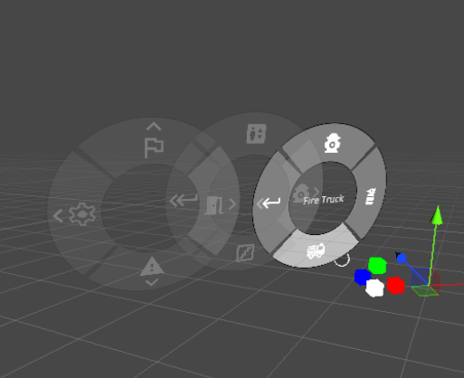
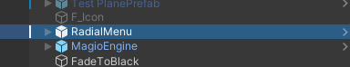
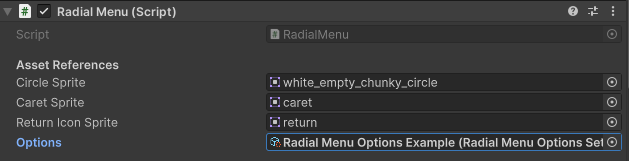
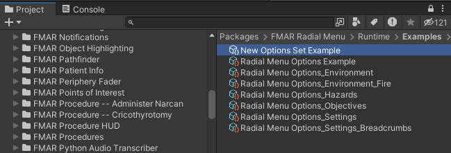
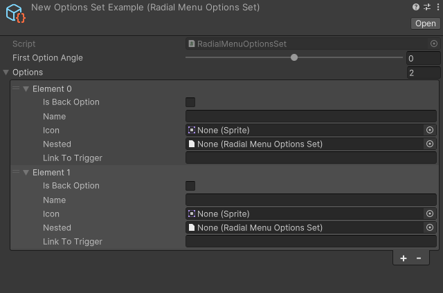

|
FirstModulAR 0.1.0
|
|
FirstModulAR 0.1.0
|

The Radial Menu is a type of gesture-driven interface that is designed to allow the user quick, almost-reflexive access to potentially dozens (or even hundreds) of distinct options. It was initially designed to solve the problem of how to grant the user access to many different distinct Point of Interest icons. The solution was to organize all of the different selectable POI icons into hierarchical menu structures, where more-commonly-used/less specific POIs are closer to the top of the hierarchy and more-rarely-used/more specific POIs are deeper in the hierarchy. So for example, the top level of a Radial Menu designed for POI selection could contain extremely broad categories of POI e.g. Objectives, Hazards, Environment, and Miscellaneous. Each category could contain its own subcategories, and so on.
The idea is that, even if these hierarchies become very complex, you are able to pack a tremendous density of selectable options into a very small user space. And best of all, since the input is extremely gestural, the idea is that users would commit frequently-used-options to muscle memory, allowing them to execute those options without even having to pay close visual attention to the menu.
Note that the Radial Menu is dependent on the Canvas Interactions system, and a Canvas Interactions object must be present in the same scene as the Radial Menu for the menu to work.
Drag the Radial Menu prefab into the root level of your scene hierarchy.

In the Inspector, drag a Radial Menu Options Set into the Options field of the Radial Menu component.

You can create your own unique radial menu hierarchies by creating a new Radial Menu Options Set, then having the Radial Menu component reference it as described in the Setup process above.
Right click anywhere in the Project File Explorer window, and select Create > FMAR > Radial Menu Options Set.

Select the newly created options set. In the inspector, you can define each option in the set. Each option contains a Nested field, in which you can provide another option set which that option can lead to, which can contain their own nested sets, and so on. This is how you create a massive hierarchy of options.

In the Link to Trigger field, you can define a string Link that will be triggered if that option is selected in the Radial Menu. You can set this link to then trigger behavior from other packages, like creating a new Point of Interest, toggling a visual filter, clearing all currently dropped breadcrumbs from memory, etc.